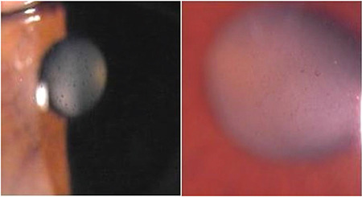
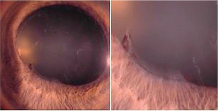
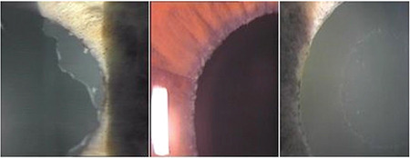
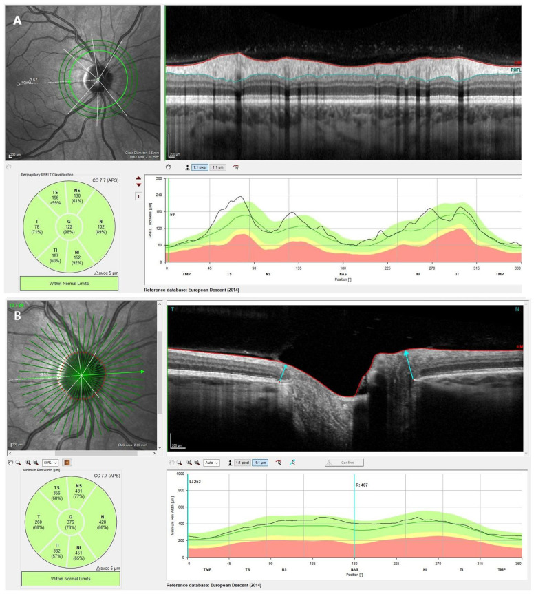

3234 — Bong vảy bao thể thủy tinh KHÔNG có glôcôm: theo dõi thế nào, khi nào SLT, khi nào phaco sớm / Pseudoexfoliation without glaucoma: surveillance, SLT, early lens extraction
Tags: pattern:bong-vay-bao-truoc pattern:tang-sac-to-goc pattern:teo-sac-to pattern:iop-binh-thuong vung:mat vung:goc-tien-phong vung:the-thuy-tinh vung:dia-thi protocol:gonioscopy protocol:AS-OCT protocol:OCT-RNFL protocol:thi-truong score:khong incidentaloma:khong
Mức chắc chắn (certainty): tổng hợp y văn (literature synthesis) — dựng từ đoàn hệ 485 mắt/369 bệnh nhân PXF theo dõi bằng thuật toán đọc thị trường (Ophthalmology 2026, DOI 10.1016/j.ophtha.2026.04.010), nghiên cứu Malmö 98 + 98 mắt OHTN có/không PXF theo dõi 8,7 năm (Ophthalmology 2005, DOI 10.1016/j.ophtha.2004.09.024), đoàn hệ 35 mắt PXF một bên (J Glaucoma 2004, DOI 10.1097/00061198-200406000-00001), nghiên cứu OCT phân lớp 65 mắt PXF + 80 chứng (BMC Ophthalmol 2026, PMC12983886), 43 mắt PEXG điều trị SLT (Korean J Ophthalmol 2021, DOI 10.3341/kjo.2021.0086), phân tích hậu kiểm OSLT 512 mắt (Ophthalmol Glaucoma 2026, DOI 10.1016/j.ogla.2025.08.008), thử nghiệm pilot 12 bệnh nhân về lấy thể thủy tinh sớm (Eye 2023, DOI 10.1038/s41433-022-02271-4), nghiên cứu phaco 61 mắt (BMC Ophthalmol 2021, DOI 10.1186/s12886-021-01970-y) và tổng quan PXF (Turk J Ophthalmol 2023, PMC10442753, CC BY-NC-ND). Nhóm không có bệnh nhân của mình; chỗ chưa đủ chắc ghi "chưa rõ". Không ghi tên tác giả — attribution dùng tạp chí + năm + PMCID/DOI.
Câu chốt: PXF không phải "một phát hiện tình cờ ở người già" — đây là bệnh tiến triển của bè củng mạc, và câu hỏi thật là ai sẽ chuyển glôcôm trong 4 năm tới. Bốn nhóm số phải thuộc: (1) trên 485 mắt PXF, glôcôm thị trường 4 năm là 26,5% (95% CI 20,7–32,0) khi không tăng nhãn áp và 37,5% (24,3–48,4) khi có tăng nhãn áp; 87,3% mắt về sau có glôcôm chưa từng được ghi nhận tăng nhãn áp ở bất kỳ lần khám nào (DOI 10.1016/j.ophtha.2026.04.010); (2) yếu tố nguy cơ độc lập: tuổi HR 1,39 mỗi 5 năm, OHTN HR 2,18, CDR HR 1,17 mỗi 0,1, còn thể thủy tinh (phakia) HR 1,94; 14,6% mắt PXF không OHTN sẽ mắc OHTN mới trong theo dõi (cùng nguồn); (3) trên nền OHTN, PXF làm tốc độ chuyển glôcôm gấp đôi: 55,1% so với 27,6% sau 8,7 năm, RR 2,0 (DOI 10.1016/j.ophtha.2004.09.024); (4) SLT 360° ở PEXG chỉ thành công 41,9% sau 12 tháng (18/43 mắt), nhóm thành công giảm 10,3 mmHg (25,6 → 15,2; 39,3%), 14/25 mắt thất bại phải mổ lọc (DOI 10.3341/kjo.2021.0086), và trong OSLT 512 mắt, PXF là yếu tố dự báo giảm hiệu quả SLT (CE −0,69; p = 0,02) (DOI 10.1016/j.ogla.2025.08.008). Bẫy chết người: xuất viện với "IOP 16 mmHg, hẹn 1 năm" — vì IOP một lần bình thường không loại trừ glôcôm đang tiến triển.
1. Tổng quan bệnh học – cơ chế hình ảnh (TẠI SAO)
1.1 PXF là bệnh lắng đọng vật liệu ngoại bào — và vì sao nó làm hỏng bè củng mạc
- PXF (pseudoexfoliation syndrome, hội chứng bong vảy bao thể thủy tinh) là bệnh toàn thân, tuổi già, đặc trưng bởi vật liệu ngoại bào dạng sợi (fibrillar) lắng đọng ở bao thể thủy tinh, dây chằng Zinn, mống mắt, thể mi, bè củng mạc, và cả tim – mạch – màng não (PMC10442753).
- Thành phần vật liệu: fibrillin-1, glycoconjugate, clusterin, vitronectin, apolipoprotein E, yếu tố bổ thể; biến thể LOXL1 gây liên kết chéo bất thường khiến sợi kháng phân giải protease, không được dọn sạch và tích tụ dần (PMC10442753; PMC13466095).
- Tại bè củng mạc có hai tầng tổn thương: (a) tắc cơ học khe bè bởi vật liệu và sắc tố; (b) loạn dưỡng chất nền ngoại bào làm bè xơ hóa, mất đàn hồi, kèm stress oxy hóa và thiếu máu vi mô (PMC10442753). Vì vậy PXF không chỉ làm tăng IOP mà còn làm đĩa thị dễ tổn thương hơn ở cùng mức IOP so với glôcôm góc mở nguyên phát (POAG).
- Dịch tễ: gặp ở 10–20% người trên 60 tuổi ở nhiều quần thể, ước tính 70 triệu người toàn cầu; hay gặp ở Phần Lan, Scandinavia, Hy Lạp, Thổ Nhĩ Kỳ; nguy cơ phát triển glôcôm cao gấp khoảng 10 lần dân số chung (PMC10442753).
1.2 Vì sao "IOP bình thường" vẫn có glôcôm — bài học từ 87,3%
- PXF có IOP tối đa và trung bình cao hơn, và biên độ dao động IOP rộng hơn POAG (PMC10442753). Đỉnh IOP có thể xảy ra ngoài giờ khám, nên một lần đo 16–18 mmHg không đại diện cho cả ngày.
- Trong đoàn hệ 485 mắt, 87,3% mắt có glôcôm thị trường không hề có OHTN được ghi nhận ở bất kỳ lần khám nào (DOI 10.1016/j.ophtha.2026.04.010). Nói cách khác: dùng IOP làm xét nghiệm sàng lọc duy nhất sẽ bỏ sót phần lớn ca.
- Cơ chế: ngoài yếu tố áp lực, PXF còn gây thiếu máu vi mô đĩa thị, elastosis lamina cribrosa và giảm tưới máu hậu nhãn cầu (PMC10442753) — nên tổn thương thần kinh thị có thể tiến triển dù IOP trong "khoảng bình thường".
- Hệ quả thực hành: chẩn đoán glôcôm ở PXF dựa trên đĩa thị + OCT RNFL/GCL + thị trường, không dựa trên một con số IOP.
1.3 Vì sao nguy cơ chuyển glôcôm cao — và không đều
- Đoàn hệ 485 mắt PXF (2016–2023, bệnh viện tuyến ba, đọc thị trường bằng 2 mô hình NLP): glôcôm thị trường tích lũy 4 năm 26,5% khi không OHTN và 37,5% khi có OHTN (p = 0,005); yếu tố nguy cơ tuổi (HR 1,39/5 năm), OHTN (HR 2,18), CDR (HR 1,17/0,1), phakia (HR 1,94); 14,6% mắt không OHTN sẽ mắc OHTN mới (DOI 10.1016/j.ophtha.2026.04.010).
- Nghiên cứu Malmö: 98 người OHTN có PXF so với 98 người OHTN không PXF, theo dõi 8,7 năm — 55,1% so với 27,6% chuyển thành glôcôm thị trường, RR 2,0 (p < 0,0001) (DOI 10.1016/j.ophtha.2004.09.024). Đây là bằng chứng mạnh nhất cho việc PXF là yếu tố nguy cơ độc lập, không chỉ là "dấu hiệu tuổi".
- Tổng quan ước tính khoảng 1/3 người PXF phát triển glôcôm (PMC13466095; PMC10442753) — con số này là trung bình dài hạn, không dùng để tư vấn từng cá nhân; nguy cơ 4 năm 26,5–37,5% thực tế cao hơn nhiều so với cảm giác "chờ xem".
1.4 Vì sao "một bên" không có nghĩa là chỉ một mắt
- PXF được chẩn đoán một bên trên lâm sàng rất hay gặp, nhưng mắt bên kia không bình thường: chuyển thành hai bên tích lũy 11% sau 5 năm, 36% sau 10 năm, 52% sau 15 năm (35 mắt, DOI 10.1097/00061198-200406000-00001).
- Trên OCT Spectralis GMPE (65 mắt PXF một bên + 80 chứng), cả mắt PXF và mắt bên kia đều có pRNFL, lớp hạch (GCL), màng đáy – MRW và hắc mạc dưới hoàng điểm mỏng hơn chứng (p < 0,05); không có khác biệt đáng kể giữa mắt PXF và mắt bên (PMC12983886).
- Hệ quả: mắt bên phải được khám và theo dõi như mắt PXF, kể cả khi chưa thấy vảy; OCT nền của mắt bên là mốc để phát hiện mỏng đi về sau.
1.5 Con số phải nhớ (ngưỡng định lượng)
| Chỉ số | Giá trị | Nguồn |
|---|---|---|
| Tỷ lệ PXF ở người > 60 tuổi | 10–20%; ~70 triệu người toàn cầu | PMC10442753 |
| Nguy cơ glôcôm so với dân số chung | ~10 lần | PMC10442753 |
| Glôcôm thị trường 4 năm, PXF không OHTN | 26,5% (95% CI 20,7–32,0) | DOI 10.1016/j.ophtha.2026.04.010 |
| Glôcôm thị trường 4 năm, PXF có OHTN | 37,5% (95% CI 24,3–48,4) | DOI 10.1016/j.ophtha.2026.04.010 |
| OHTN mới xuất hiện trong theo dõi | 14,6% mắt PXF không OHTN | DOI 10.1016/j.ophtha.2026.04.010 |
| Glôcôm mà không từng ghi nhận OHTN | 87,3% | DOI 10.1016/j.ophtha.2026.04.010 |
| Tuổi | HR 1,39 mỗi 5 năm | DOI 10.1016/j.ophtha.2026.04.010 |
| OHTN | HR 2,18 | DOI 10.1016/j.ophtha.2026.04.010 |
| CDR | HR 1,17 mỗi 0,1 | DOI 10.1016/j.ophtha.2026.04.010 |
| Phakia (còn thể thủy tinh) | HR 1,94 | DOI 10.1016/j.ophtha.2026.04.010 |
| OHTN + PXF vs OHTN không PXF | 55,1% vs 27,6% sau 8,7 năm; RR 2,0 | DOI 10.1016/j.ophtha.2004.09.024 |
| PXF một bên → hai bên | 11% / 36% / 52% ở 5 / 10 / 15 năm | DOI 10.1097/00061198-200406000-00001 |
| SLT 360° ở PEXG, thành công 12 tháng | 41,9% (18/43); giảm 10,3 mmHg (25,6 → 15,2; 39,3%) | DOI 10.3341/kjo.2021.0086 |
| PXF là yếu tố giảm hiệu quả SLT (OSLT) | CE −0,69 (p = 0,02) | DOI 10.1016/j.ogla.2025.08.008 |
| Phaco ở mắt PXF | −4,50 mmHg so với −2,35 mmHg ở chứng (3 tháng) | DOI 10.1186/s12886-021-01970-y |
| Lấy thể thủy tinh đơn thuần ở PXF | 15,8 ± 2,5 → 12,9 ± 2,7 mmHg sau 1 năm; thuốc 0,40 → 0,28 | DOI 10.1016/j.ophtha.2026.04.010 |
2. Mẫu hình + chẩn đoán phân biệt theo vị trí (gamut)
2.1 Bộ dấu hiệu khám — thứ tự không được đảo
- Đèn khe trước giãn đồng tử: tìm vảy trắng xám ở bờ đồng tử ("moth-eaten" margin), mất sắc tố mống mắt, lắng đọng trên nội mô giác mạc.
- Sau giãn đồng tử tối đa: tìm ba vùng kinh điển trên bao trước — đĩa trung tâm, vùng sạch trung gian, vòng ngoại vi; ở mắt giả thể thủy tinh không còn ba vùng, phải tìm vảy trên mặt trước IOL, dịch kính trước, bao sau.
- Gonioscopy (bắt buộc, trước hoặc sau giãn tùy góc): tăng sắc tố bè củng mạc, thường dày hơn ở phía dưới, không đậm bằng glôcôm sắc tố, có thể thấy dòng sắc tố trên vạch Schwalbe (Sampaolesi line) và hạt trắng nhỏ trong góc (PMC10442753).
- Đĩa thị + OCT: chụp ảnh đĩa thị lập thể, OCT pRNFL + GCL/MRW, so với chuẩn theo tuổi; ghi CDR, mất vành sợi thần kinh, xuất huyết đĩa thị.
- Thị trường 24-2 (hoặc 10-2 nếu đã tiến triển): làm nền ngay cả khi IOP bình thường, vì 87,3% ca glôcôm không có OHTN (DOI 10.1016/j.ophtha.2026.04.010).
2.2 Gamut "vảy trắng ở bờ đồng tử"
- PXF — vảy trắng xám, dạng bột, bờ đồng tử nham nhở, kèm ba vùng bao trước, giãn đồng tử kém, phacodonesis muộn.
- Bong vảy thật (true exfoliation) — hiếm, ở thợ thổi thủy tinh/tiền sử nhiệt, mảnh bao trước dày, cuộn mép, không có lắng đọng bè củng mạc kiểu PXF.
- IFIS (hội chứng mống mắt đàn hồi) — do α1-antagonist, mống mắt lượn sóng – co dần – sa ra vết mổ, không có vảy; PXF và IFIS có thể cùng tồn tại.
- Dính sau mống mắt – bao trước — đồng tử dính không đều, thấy dải dính, không có vảy ba vùng.
- Vảy PXF trên IOL/dịch kính sau phaco — không phải "tái phát"; là vật liệu lắng trên bề mặt IOL/dịch kính trước, thường không gây viêm.
2.3 Gamut "tăng sắc tố góc tiền phòng"
- PXF — sắc tố nâu xám, rải rác hoặc thành dòng, dày ở phía dưới, kèm vảy trắng và Sampaolesi line; không đậm bằng glôcôm sắc tố (PMC10442753).
- Hội chứng phân tán sắc tố (PDS) / glôcôm sắc tố (PG) — nam trẻ cận thị, Krukenberg spindle trên nội mô, sắc tố góc dày toàn chu vi, đồng tử giãn tốt, không có vảy bao trước; IOP tăng sau gắng sức/giãn đồng tử.
- Sắc tố sau chấn thương/mổ — tiền sử đụng dập, rách thể mi, góc rẽ (angle recession), sắc tố một vùng, kèm iridodialysis hoặc lệch thể thủy tinh.
- Melanoma/melanocytosis góc — sắc tố khu trú, dày cục, có thể tăng sinh mạch, không đối xứng kiểu PXF; cần UBM/AS-OCT và sinh thiết khi nghi.
- Máu cũ trong góc — đỏ nâu, tan dần, tiền sử chấn thương/xuất huyết, không có vảy.
2.4 Gamut "IOP bình thường mà đĩa thị đã lõm"
- PEXG không tăng nhãn áp — 87,3% ca glôcôm PXF không từng ghi nhận OHTN; đĩa thị lõm sâu, mất vành, OCT mỏng theo chuẩn tuổi, thị trường ám điểm cung.
- POAG/NTG — không có vảy, góc không tăng sắc tố, CDR lớn hai bên, tiến triển chậm.
- Thiếu máu thị thần kinh (NAION/AION) — mất thị lực đột ngột, đĩa thị phù giai đoạn cấp, khiếm khuyết thị trường ngang, không tiến triển kiểu glôcôm.
- Glôcôm do steroid — tiền sử nhỏ/thuốc steroid, IOP tăng muộn, góc mở, không vảy.
- Bệnh thần kinh thị khác — u chèn ép, viêm thị, bệnh Leber; cần MRI hốc mắt/thị giác nếu lâm sàng không khớp.
2.5 Phân tầng nguy cơ tại phòng khám (khung thực hành, không phải thang điểm đã ngoại kiểm)
| Mức | Tiêu chí gợi ý | Theo dõi đề xuất |
|---|---|---|
| Thấp | PXF mới, IOP < 21 mmHg, CDR < 0,5, không OHTN, còn trẻ hơn, giả thể thủy tinh | 12 tháng/lần: IOP, đĩa thị, OCT, thị trường; gonioscopy khi có thay đổi |
| Trung bình | CDR 0,5–0,7, OHTN nhẹ, phakia, tuổi cao, mắt bên đã có PXF/glôcôm | 6 tháng/lần: IOP (có thể đo nhiều thời điểm), OCT, thị trường 6–12 tháng |
| Cao | OHTN đang điều trị, CDR ≥ 0,7, mất vành sợi, thị trường bắt đầu biến đổi, tiền sử glôcôm mắt bên | 3–6 tháng/lần; SLT/thuốc; chuyển chuyên gia glôcôm nếu tiến triển |
Đây là khung thực hành dựa trên các yếu tố nguy cơ của DOI 10.1016/j.ophtha.2026.04.010; chưa có thử nghiệm xác định khoảng theo dõi tối ưu — xem mục 7.
3. Bảng so sánh phân biệt (ma trận đối chiếu)
| Thực thể (entity) | Hình ảnh/khám điển hình | Chốt vào (rule-in) | Chốt loại (rule-out) | Gợi ý xác nhận |
|---|---|---|---|---|
| PXF không glôcôm | Vảy bờ đồng tử + ba vùng bao trước; góc tăng sắc tố dưới; IOP bình thường; đĩa thị chưa lõm | Vảy ba vùng + gonioscopy sắc tố dưới + OCT/HVF bình thường | Không có vảy, góc không sắc tố → không phải PXF; đĩa thị lõm + HVF bất thường → đã là glôcôm | Đèn khe sau giãn, gonioscopy, OCT nền, HVF nền |
| OHTN trên nền PXF | PXF + IOP cao (thường ≥ 22–24 mmHg), đĩa thị chưa tổn thương, HVF bình thường | PXF + IOP cao + OCT/HVF bình thường | HVF/OCT đã bất thường → PEXG, không còn là OHTN; IOP bình thường → PXF đơn thuần | Đo IOP nhiều thời điểm, OCT, HVF; loại trừ nguyên nhân IOP khác |
| PEXG | PXF + IOP cao hoặc dao động + CDR lớn/mất vành + HVF ám điểm cung; có thể IOP bình thường | Tổn thương đĩa thị/OCT + HVF tương ứng, bất kể IOP | Chỉ IOP cao, đĩa thị/HVF bình thường → OHTN; không vảy → POAG/NTG | OCT pRNFL/GCL, HVF 24-2, ảnh đĩa thị |
| PDS/glôcôm sắc tố | Nam trẻ cận thị, Krukenberg spindle, sắc tố góc dày toàn chu vi, không vảy; IOP tăng sau gắng sức | Krukenberg + sắc tố góc dày + không vảy bao trước | Có vảy ba vùng + tuổi cao → PXF; sắc tố khu trú → melanoma/máu cũ | Đèn khe, gonioscopy, tiền sử gắng sức |
| PXF + góc đóng | PXF + góc hẹp, đồng tử dày, có thể cơn tăng nhãn áp cấp; AS-OCT/UBM thấy góc đóng, mống mắt áp sát | PXF + góc hẹp/đóng trên gonioscopy hoặc AS-OCT | Góc mở rộng → PXF đơn thuần; không vảy → góc đóng nguyên phát | Gonioscopy, AS-OCT/UBM, soi góc sau giãn |
| Vảy trên IOL/dịch kính sau phaco | Vảy trắng trên mặt trước IOL, dịch kính trước, bao sau; không đau, không viêm | Tiền sử phaco + vảy trên IOL/dịch kính + không viêm | Mủ tiền phòng, đau, giảm thị lực → viêm nội nhãn/TASS; tăng sắc tố + IOP tăng → UGH | Đèn khe, siêu âm, cấy dịch kính nếu nghi nhiễm |
4. Protocol chụp/đánh giá + hệ phân độ và ngưỡng xử trí
4.1 Bộ đánh giá nền (baseline) — làm một lần khi phát hiện PXF
| Bước | Việc làm | Ngưỡng/ghi chú |
|---|---|---|
| 1 | BCVA, khúc xạ, sinh hiển vi | Ghi giãn đồng tử tối đa (mm) và thời gian giãn |
| 2 | IOP Goldmann | Đo 2 lần, ghi thời điểm; cân nhắc đo nhiều thời điểm trong ngày nếu nghi dao động |
| 3 | Gonioscopy | Ghi độ mở góc, mức sắc tố (0–4), Sampaolesi line, synechiae, mạch bất thường |
| 4 | Đèn khe sau giãn | Ba vùng bao trước; vảy bờ đồng tử; phacodonesis; vảy trên IOL/dịch kính nếu giả thủy tinh |
| 5 | Ảnh đĩa thị lập thể + OCT pRNFL/GCL/MRW | So chuẩn theo tuổi; ghi CDR, mất vành, xuất huyết |
| 6 | Thị trường 24-2 | Làm nền ngay cả khi IOP bình thường; 10-2 nếu tổn thương trung tâm |
| 7 | CCT (độ dày giác mạc trung tâm) | Giải thích sai lệch tonometry; không dùng CCT để chẩn đoán glôcôm |
| 8 | AS-OCT/UBM | Khi góc hẹp, đục giác mạc, hoặc cần đo góc – mống mắt trước phaco |
4.2 Lịch theo dõi — chia theo nguy cơ, không "hẹn 1 năm cho tất cả"
- Nguy cơ thấp: 12 tháng/lần — IOP, đĩa thị, OCT, HVF; gonioscopy khi có thay đổi hoặc 2–3 năm/lần.
- Nguy cơ trung bình: 6 tháng/lần — IOP, OCT; HVF 6–12 tháng; gonioscopy mỗi lần nếu góc hẹp.
- Nguy cơ cao: 3–6 tháng/lần — IOP (cân nhắc đo dao động ngày), OCT, HVF; SLT/thuốc; chuyển chuyên gia glôcôm khi có tiến triển.
- Mắt bên: theo dõi cùng lịch với mắt PXF, kể cả khi chưa thấy vảy — vì 36% chuyển hai bên sau 10 năm và OCT mắt bên đã mỏng hơn chứng (DOI 10.1097/00061198-200406000-00001; PMC12983886).
- Sau phaco: khám 1 ngày, 1 tuần, 1 tháng, 3 tháng, sau đó 6–12 tháng; theo dõi IOP, vị trí IOL, vảy trên IOL, và đĩa thị vì phakia là yếu tố nguy cơ (HR 1,94) nhưng mổ không "chữa khỏi" PXF.
4.3 Khi nào điều trị — và khi nào KHÔNG
- PXF không OHTN, đĩa thị/OCT/HVF bình thường: không có bằng chứng cho việc hạ IOP dự phòng; theo dõi là chính. Không kê thuốc chỉ vì "thấy vảy".
- OHTN trên nền PXF: điều trị vì nguy cơ chuyển glôcôm gấp đôi (55,1% vs 27,6% sau 8,7 năm; DOI 10.1016/j.ophtha.2004.09.024). Lựa chọn: SLT 360° hoặc thuốc; đích IOP cá thể hóa theo tuổi, CDR, tốc độ tiến triển, mắt bên.
- PEXG: điều trị theo glôcôm, không chỉ theo IOP; SLT có thể dùng nhưng hiệu quả thấp hơn (41,9% thành công 12 tháng; PXF CE −0,69); phaco + MIGS/lọc khi cần đích thấp (xem bài 3223).
- Phaco: chỉ định vì đục thể thủy tinh ảnh hưởng thị lực, không vì "phòng glôcôm". Phaco hạ IOP 3–4,5 mmHg nhưng không thay thế theo dõi; ở PXF nguy cơ đứt dây chằng, rơi nhân, trật IOL muộn cao hơn (bài 1512).
4.4 SLT trong PXF — kỳ vọng đúng, kỹ thuật đúng
- Kỹ thuật: 360°, năng lượng cao (tần suất bọt khí 50–75%) là biến thể hiệu quả nhất trong OSLT 512 mắt (p < 0,001) (DOI 10.1016/j.ogla.2025.08.008).
- Hiệu quả ở PEXG: 41,9% đạt tiêu chí thành công sau 12 tháng (giảm ≥ 20% IOP và IOP ≤ 22 mmHg, không can thiệp thêm); nhóm thành công giảm 10,3 mmHg (25,6 → 15,2; 39,3%); 14/25 mắt thất bại phải mổ lọc (DOI 10.3341/kjo.2021.0086).
- PXF làm giảm hiệu quả SLT so với không PXF: CE −0,69 (p = 0,02) trong OSLT (DOI 10.1016/j.ogla.2025.08.008) — không hứa "SLT là xong".
- LiGHT chứng minh SLT first-line ở POAG/OHTN, nhưng loại trừ glôcôm thứ phát (bao gồm PXF) (DOI 10.3310/hta23310) — không ngoại suy nguyên xi sang PXF.
4.5 Phaco sớm — bằng chứng đến đâu?
- Lấy thể thủy tinh đơn thuần ở mắt PXF: 15,8 ± 2,5 → 12,9 ± 2,7 mmHg sau 1 năm; số thuốc 0,40 → 0,28 (DOI 10.1016/j.ophtha.2026.04.010).
- So sánh trực tiếp: phaco ở PXF hạ −4,50 mmHg so với −2,35 mmHg ở chứng sau 3 tháng (61 mắt; DOI 10.1186/s12886-021-01970-y).
- Pilot RCT 12 bệnh nhân PXFG/OHTN + PXF: cả hai nhánh đều giảm IOP; lấy thể thủy tinh sớm tốt hơn về BCVA, số điều trị, chất lượng sống, không có biến chứng — nhưng cỡ mẫu quá nhỏ để kết luận (DOI 10.1038/s41433-022-02271-4).
- Kết luận thực hành: không mổ phaco dự phòng chỉ để hạ IOP; mổ khi đục thể thủy tinh có chỉ định, và chuẩn bị tâm lý – kỹ thuật cho dây chằng yếu (CTR, van, kỹ thuật mềm tay).
4.6 Sơ đồ quyết định
flowchart TD
A[Phát hiện PXF] --> B{Gonioscopy: góc mở?}
B -->|Không, góc hẹp/đóng| C[Đánh giá góc đóng + AS-OCT/UBM]
B -->|Có| D{IOP và đĩa thị/OCT/HVF}
D -->|IOP bình thường, đĩa thị/HVF bình thường| E[PXF không glôcôm: theo dõi 6-12 tháng]
D -->|IOP cao, đĩa thị/HVF bình thường| F[OHTN trên PXF: điều trị + theo dõi 3-6 tháng]
D -->|Đĩa thị/OCT/HVF bất thường| G[PEXG: điều trị glôcôm]
F --> H{Đích IOP đạt?}
H -->|Có| I[Tiếp tục, HVF/OCT mỗi 6-12 tháng]
H -->|Không| J[SLT 360 high hoặc thuốc; cân nhắc phaco + MIGS/lọc]
G --> J
E --> K{Đục thể thủy tinh có chỉ định?}
K -->|Có| L[Phaco + chuẩn bị zonule; theo dõi IOL]
K -->|Không| E
5. Biến thể bình thường và cạm bẫy
Sắc tố nội mô giác mạc ở PXF ≠ Krukenberg spindle. PXF có thể lắng sắc tố rải rác trên nội mô, nhưng không tạo spindle dày trung tâm như PDS; bệnh nhân lớn tuổi, có vảy bao trước, góc sắc tố dưới (PMC10442753). Ảnh dưới cho thấy sắc tố nội mô lan tỏa — đừng gọi là "PDS" rồi bỏ qua vảy.

Nguồn: Turk J Ophthalmol 2023 (PMC10442753), Fig. 2 — CC BY-NC-ND 4.0, nguyên bản."Một bên" là bẫy. Mắt bên có thể chưa thấy vảy nhưng OCT đã mỏng hơn chứng; 36% chuyển hai bên sau 10 năm. Luôn khám cả hai mắt, chụp OCT nền cả hai (PMC12983886; DOI 10.1097/00061198-200406000-00001).
IOP bình thường một lần ≠ không glôcôm. 87,3% ca glôcôm PXF không từng có OHTN; PXF có dao động IOP rộng hơn POAG. Đo nhiều thời điểm, đừng "hẹn 1 năm" chỉ vì IOP 16 mmHg (DOI 10.1016/j.ophtha.2026.04.010; PMC10442753).
Giãn đồng tử có thể làm tăng IOP thoáng qua do giải phóng sắc tố/vật liệu ở PXF; ở góc hẹp, giãn đồng tử có thể gây cơn góc đóng. Khám góc trước, và theo dõi IOP sau giãn ở mắt nguy cơ.
CCT mỏng/dày làm lệch tonometry. PXF không đồng nghĩa CCT bất thường; dùng CCT để hiệu chỉnh, không để chẩn đoán.
Sau phaco, vảy trên IOL không phải "viêm" và không phải "tái phát". Đừng cho steroid kéo dài chỉ vì thấy vảy; nhưng đau + mủ tiền phòng + giảm thị lực là viêm nội nhãn — khác hoàn toàn.
Mắt giả thể thủy tinh giảm nguy cơ nhưng không về 0. Phakia HR 1,94 so với giả thủy tinh, nhưng PXF vẫn tiếp tục lắng và IOL có thể trật muộn (bài 1512).

Nguồn: Turk J Ophthalmol 2023 (PMC10442753), Fig. 4 — CC BY-NC-ND 4.0, nguyên bản.
6. Tự lượng giá — Blind Quiz
Ca 1 — Nam 72 tuổi, IOP 18 mmHg cả hai mắt, CDR 0,6/0,55. Nhìn bờ đồng tử trước khi đọc đáp án.

- Gợi ý: không đau, thị lực 20/25, chưa từng dùng thuốc glôcôm.
- Câu hỏi: Dấu hiệu chính? Đây có phải glôcôm không? Bước tiếp theo gồm gì?
Bấm để hiện đáp án (findings + chẩn đoán)
- Dấu hiệu: vảy trắng xám, dạng bột ở bờ đồng tử, bờ nham nhở ("moth-eaten") — PXF. Cần giãn đồng tử tìm ba vùng bao trước và gonioscopy tìm sắc tố dưới.
- Chẩn đoán: PXF không glôcôm (IOP 18, đĩa thị chưa lõm) — nhưng CDR 0,6 và tuổi 72 làm nguy cơ cao hơn; 4 năm 26,5% nếu không OHTN (DOI 10.1016/j.ophtha.2026.04.010).
- Bước tiếp theo: OCT pRNFL/GCL + HVF 24-2 nền, gonioscopy, ảnh đĩa thị; theo dõi 6 tháng (không phải 1 năm) vì CDR/tuổi; không kê thuốc dự phòng khi chưa có tổn thương.
- Nguồn ảnh: Turk J Ophthalmol 2023 (PMC10442753), Fig. 3 — CC BY-NC-ND 4.0.
Ca 2 — Nữ 65 tuổi, IOP 17 mmHg, giác mạc có chấm sắc tố. Hỏi: có phải glôcôm sắc tố không?
- Gợi ý: không cận thị, không gắng sức, chưa từng bị chấn thương mắt.
- Câu hỏi: Mô tả sắc tố? Cần khám thêm gì để phân biệt PXF với PDS? Dấu hiệu nào chốt?
Bấm để hiện đáp án
- Dấu hiệu: sắc tố rải rác trên nội mô, không tạo spindle trung tâm dày; kèm vảy bờ đồng tử và ba vùng bao trước khi giãn.
- Phân biệt: PDS thường nam trẻ cận thị, Krukenberg spindle, sắc tố góc toàn chu vi, không vảy; PXF lớn tuổi, sắc tố góc dưới, có vảy (PMC10442753).
- Chốt: gonioscopy + đèn khe sau giãn; nếu có vảy ba vùng → PXF, không phải PDS. Không chẩn đoán PDS chỉ vì thấy sắc tố nội mô.
- Nguồn ảnh: Turk J Ophthalmol 2023 (PMC10442753), Fig. 2 — CC BY-NC-ND 4.0.
Ca 3 — Nam 70 tuổi PXF, IOP 16 mmHg, thị trường còn tốt. Đọc báo cáo OCT này trước khi xem đáp án.

- Gợi ý: OCT làm lần đầu, chưa có phim cũ; mắt bên cũng có PXF.
- Câu hỏi: Báo cáo nói gì? Có được xuất viện không? Lần sau chụp gì, khi nào?
Bấm để hiện đáp án
- Dấu hiệu: pRNFL và BMO-MRW nằm trong giới hạn bình thường theo chuẩn tuổi (dải xanh); không có vùng đỏ.
- Chẩn đoán: chưa có bằng chứng tổn thương thần kinh thị — nhưng PXF là bệnh tiến triển, IOP 16 không loại trừ glôcôm (87,3% ca không từng OHTN). Không xuất viện: đây là mốc nền.
- Theo dõi: lặp OCT + HVF sau 6–12 tháng, so cùng máy, cùng chuẩn; khám mắt bên; nếu mỏng đi ≥ 5–10 µm hoặc HVF đổi → chuyển chuyên gia, cân nhắc điều trị.
- Nguồn ảnh: BMC Ophthalmol 2026 (PMC12983886), Fig. 3 — CC BY-NC-ND 4.0.
7. Câu hỏi nghiên cứu & điểm chưa đồng thuận (tính đến 11/2026)
[Tranh cãi] Ở PXF không có OHTN và chưa có tổn thương đĩa thị, có nên hạ IOP dự phòng bằng SLT hoặc phaco sớm để giảm chuyển glôcôm không?
- Đã biết: 26,5% mắt PXF không OHTN chuyển glôcôm thị trường trong 4 năm (DOI 10.1016/j.ophtha.2026.04.010); SLT 360° thành công 41,9% sau 12 tháng ở PEXG và PXF làm giảm hiệu quả SLT (CE −0,69) (DOI 10.3341/kjo.2021.0086; DOI 10.1016/j.ogla.2025.08.008); LiGHT loại trừ glôcôm thứ phát nên không trả lời được câu này (DOI 10.3310/hta23310).
- Chưa rõ: không có RCT so SLT/không điều trị hoặc phaco sớm/không mổ ở PXF chưa có glôcôm; chưa biết ngưỡng IOP nào (nếu có) đáng để điều trị dự phòng; chưa rõ tác hại của điều trị sớm (chi phí, viêm, tăng IOP sau SLT).
- Hướng nghiên cứu: RCT đa trung tâm, chọn PXF không OHTN, phân tầng theo tuổi/CDR/phakia, so SLT 360° high với theo dõi, outcome chuyển glôcôm thị trường 4–5 năm, chi phí–hiệu quả, tác dụng phụ.
- Nguồn: DOI 10.1016/j.ophtha.2026.04.010 (2026); DOI 10.3341/kjo.2021.0086 (2021); DOI 10.1016/j.ogla.2025.08.008 (2026); DOI 10.3310/hta23310 (2019).
[Khoảng trống] Khoảng theo dõi và bộ xét nghiệm nào phát hiện chuyển glôcôm sớm nhất ở PXF — IOP nhiều thời điểm, OCT GCL/MRW, hay HVF?
- Đã biết: 87,3% ca glôcôm PXF không từng có OHTN; 14,6% mắt không OHTN sẽ mắc OHTN mới (DOI 10.1016/j.ophtha.2026.04.010); mắt bên của PXF một bên đã có pRNFL/GCL/MRW mỏng hơn chứng (PMC12983886); mô hình dự báo 18 biến số chỉ đúng 71% trong 3 năm (DOI 10.1016/j.ogla.2024.10.006).
- Chưa rõ: chưa có thử nghiệm so các khoảng theo dõi (3, 6, 12 tháng) hay thứ tự ưu tiên OCT vs HVF; chưa rõ ngưỡng mỏng đi có ý nghĩa trên OCT ở PXF (khác POAG); chưa có thang điểm nguy cơ được ngoại kiểm.
- Hướng nghiên cứu: đoàn hệ tiền cứu, chụp OCT + HVF đồng thời mỗi 6 tháng, phân tích thời gian đến chuyển glôcôm, số lần khám cần thiết, chi phí–hiệu quả; xây mô hình tiên lượng có kiểm định ngoài.
- Nguồn: DOI 10.1016/j.ophtha.2026.04.010 (2026); PMC12983886 (2026); DOI 10.1016/j.ogla.2024.10.006 (2025).
[Khác biệt thực hành] Có nên mổ phaco sớm ở mắt PXF còn thị lực tốt để "hạ IOP và phòng glôcôm" — hay chỉ mổ khi đục thể thủy tinh có chỉ định?
- Đã biết: phaco hạ −4,50 mmHg ở PXF so với −2,35 mmHg ở chứng sau 3 tháng (DOI 10.1186/s12886-021-01970-y); lấy thể thủy tinh đơn thuần hạ 3 mmHg sau 1 năm trong đoàn hệ 485 mắt (DOI 10.1016/j.ophtha.2026.04.010); pilot RCT 12 bệnh nhân cho thấy khả thi và có lợi về BCVA/điều trị, nhưng quá nhỏ để kết luận (DOI 10.1038/s41433-022-02271-4); PXF có nguy cơ dây chằng/IOL muộn cao (bài 1512).
- Chưa rõ: chưa có RCT đủ lực trả lời phaco sớm có giảm tỷ lệ chuyển glôcôm hay chỉ hạ IOP tạm thời; chưa rõ thời điểm và ai được lợi nhất (tuổi, CDR, phakia, mắt bên).
- Hướng nghiên cứu: RCT phaco sớm vs theo dõi ở PXF có đục nhẹ, outcome chuyển glôcôm, IOP, số thuốc, biến chứng zonule/IOL, chất lượng sống, thời gian theo dõi ≥ 5 năm.
- Nguồn: DOI 10.1186/s12886-021-01970-y (2021); DOI 10.1016/j.ophtha.2026.04.010 (2026); DOI 10.1038/s41433-022-02271-4 (2023).
Bài liên quan chéo
- 400 – Tổng quan Mắt & thị giác
- 1512 – PEX trước phaco: vảy ba vùng, phacodonesis, đứt dây chằng Zinn (nguy cơ mổ và trật IOL muộn)
- 3223 – Phaco ở mắt PEX có glôcôm: phaco đơn thuần, MIGS hay lọc (khi đã có glôcôm)
- 3225 – Hội chứng UGH sau IOL/vật liệu ngoại lai (tăng nhãn áp + viêm sau mổ — đừng nhầm PXF)
- 442 – Glaucoma: OCT RNFL/GCC + góc tiền phòng (đọc OCT và góc trong glôcôm)
- 1508 – IFIS: mống mắt đàn hồi khi phaco (phân biệt với PXF)
Ảnh
- Tên file:
3234_PXF-<mô tả>_<Modality>_PMCxxxxxxx-FigN.jpg; nguồn + giấy phép từng ảnh trongimages/CREDITS.md. - 3 ảnh gốc từ PMC10442753 (Turk J Ophthalmol 2023, CC BY-NC-ND 4.0 — dùng nguyên bản, không cắt/ghép) và 1 ảnh gốc từ PMC12983886 (BMC Ophthalmol 2026, CC BY-NC-ND 4.0 — nguyên bản).
- Không tạo ảnh ghép vì cả hai nguồn đều ND (không cho tác phẩm phái sinh); không crop, không đổi màu.
Không dùng để chẩn đoán độc lập khi chưa có người hướng dẫn.